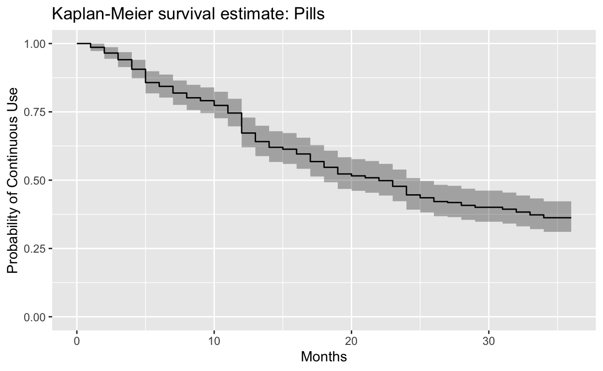
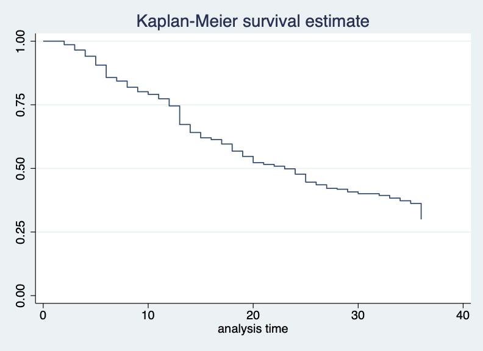

R and Stata code with video from an event held at the Population Association of America 2021 Annual Meeting.
On May 4th, PMA and IPUMS PMA co-hosted a Population Association of America 2021 virtual data workshop showcasing the new PMA contraceptive calendar data available for these samples:
These data represent contraceptive use, pregnancy, pregnancy termination, and birth information recalled by female respondents for each of several months preceding the PMA interview. Women sampled in Burkina Faso and Democratic Republic of the Congo were each asked to recall monthly information for up to 24 months, while women sampled from Kenya and Nigeria were asked to recall monthly information for up to 36 months. Their responses are recorded in a single comma delimited string, where information about each month is represented by one of the following codes:
In this video, PMA and IPUMS PMA explain the background behind contraceptive calendar data and show some of the ways you might consider using it in longitudinal analysis. We also give a conceptual overview of the steps both R and Stata users should take to reshape the data into a long format. After the overview, R and Stata users split into separate breakout sessions to work with a hands-on coding example using data from the Kenya 2019 sample; this example shows how to build a Kaplan-Meier survival curve for cohorts of women who were using the same family planning method in the first month of the contraceptive calendar.
R users can load a fixed-width IPUMS PMA data extract with help from the ipumsr package (if you’re new to this blog, check out detailed instructions here). We also use packages from tidyverse to reformat the data, as well as survival and ggfortify for specific survival analysis functions.
When you open any IPUMS PMA data extract from the Household and Female Survey, you’ll find the data organized with one respondent per row. Here, there are 9,549 rows each representing one female respondent (all other household members have been excluded):
dat
# A tibble: 9,549 x 17
SAMPLE COUNTRY YEAR HHID PERSONID ELIGIBLE EAID CONSENTFQ
<int+lbl> <int+l> <int> <chr> <chr> <int+lb> <dbl> <int+lbl>
1 40410 [Keny… 7 [Ken… 2019 4042… 4042019… 1 [Yes,… 4.04e8 1 [Yes]
2 40410 [Keny… 7 [Ken… 2019 4042… 4042019… 1 [Yes,… 4.04e8 1 [Yes]
3 40410 [Keny… 7 [Ken… 2019 4042… 4042019… 1 [Yes,… 4.04e8 1 [Yes]
4 40410 [Keny… 7 [Ken… 2019 4042… 4042019… 1 [Yes,… 4.04e8 1 [Yes]
5 40410 [Keny… 7 [Ken… 2019 4042… 4042019… 1 [Yes,… 4.04e8 1 [Yes]
6 40410 [Keny… 7 [Ken… 2019 4042… 4042019… 1 [Yes,… 4.04e8 1 [Yes]
7 40410 [Keny… 7 [Ken… 2019 4042… 4042019… 1 [Yes,… 4.04e8 1 [Yes]
8 40410 [Keny… 7 [Ken… 2019 4042… 4042019… 1 [Yes,… 4.04e8 1 [Yes]
9 40410 [Keny… 7 [Ken… 2019 4042… 4042019… 1 [Yes,… 4.04e8 1 [Yes]
10 40410 [Keny… 7 [Ken… 2019 4042… 4042019… 1 [Yes,… 4.04e8 1 [Yes]
11 40410 [Keny… 7 [Ken… 2019 4042… 4042019… 1 [Yes,… 4.04e8 1 [Yes]
12 40410 [Keny… 7 [Ken… 2019 4042… 4042019… 1 [Yes,… 4.04e8 1 [Yes]
13 40410 [Keny… 7 [Ken… 2019 4042… 4042019… 1 [Yes,… 4.04e8 1 [Yes]
14 40410 [Keny… 7 [Ken… 2019 4042… 4042019… 1 [Yes,… 4.04e8 1 [Yes]
15 40410 [Keny… 7 [Ken… 2019 4042… 4042019… 1 [Yes,… 4.04e8 1 [Yes]
16 40410 [Keny… 7 [Ken… 2019 4042… 4042019… 1 [Yes,… 4.04e8 1 [Yes]
17 40410 [Keny… 7 [Ken… 2019 4042… 4042019… 1 [Yes,… 4.04e8 1 [Yes]
18 40410 [Keny… 7 [Ken… 2019 4042… 4042019… 1 [Yes,… 4.04e8 1 [Yes]
19 40410 [Keny… 7 [Ken… 2019 4042… 4042019… 1 [Yes,… 4.04e8 1 [Yes]
20 40410 [Keny… 7 [Ken… 2019 4042… 4042019… 1 [Yes,… 4.04e8 1 [Yes]
# … with 9,529 more rows, and 9 more variables: FQINSTID <chr>,
# CONSENTHQ <int+lbl>, FQWEIGHT <dbl>, STRATA <int+lbl>,
# SUBNATIONAL <int+lbl>, AGE <int+lbl>, BIRTHEVENT <int+lbl>,
# WORKYR <int+lbl>, CALENDARKE <chr+lbl>For the purpose of this exercise only we create a short identifying number for each respondent called ID. Then, we select only the variables ID and CALENDARKE (dropping all of the other variables pre-selected for every IPUMS PMA extract).
dat <- dat %>%
rowid_to_column("ID") %>%
select(ID, CALENDARKE)
dat
# A tibble: 9,549 x 2
ID CALENDARKE
<int> <chr+lbl>
1 1 0,0,B,P,P,P,P,P,P,P,P,0,0,0,0,0,0,0,0,0,0,0,0,3,3,3,3,3,3,3,…
2 2 ,7,7,7,7,7,7,7,7,0,B,P,P,P,P,P,P,P,P,0,0,0,0,0,9,9,9,9,9,9,9…
3 3 0,0,0,0,0,0,0,0,0,0,0,0,0,0,0,0,0,0,0,0,0,0,0,0,0,0,0,0,0,0,…
4 4 0,0,0,0,0,0,0,0,0,0,0,0,0,0,0,0,0,0,0,0,0,0,0,0,0,0,0,0,0,0,…
5 5 ,5,5,5,5,5,5,5,5,5,5,5,5,5,5,5,5,B,P,P,P,P,P,P,P,P,0,0,0,0,0…
6 6 5,5,5,5,5,5,5,5,5,5,5,5,5,5,5,5,5,5,5,5,5,5,5,5,5,5,5,5,5,5,…
7 7 5,5,5,5,5,5,0,0,0,0,0,0,0,0,0,0,0,0,0,0,0,0,0,0,B,P,P,P,P,P,…
8 8 P,P,P,P,P,P,P,P,0,0,0,0,0,0,0,14,14,14,14,14,14,14,B,P,P,P,P…
9 9 0,0,0,0,0,0,0,0,0,0,0,0,0,0,0,0,0,0,0,0,0,0,0,0,0,0,0,0,0,0,…
10 10 ,P,P,P,9,9,9,9,9,9,9,9,9,9,9,9,9,9,9,9,9,9,9,9,9,9,9,9,9,9,9…
11 11 ,0,0,0,0,0,0,0,0,0,0,0,0,0,0,0,0,0,0,0,0,0,0,0,0,0,0,0,0,0,0…
12 12 ,0,0,0,0,0,0,0,0,0,0,0,0,0,0,0,0,0,0,0,0,0,0,0,0,0,0,0,0,0,0…
13 13 ,P,P,P,P,P,P,P,9,9,9,9,9,9,9,9,9,9,9,9,9,9,9,9,9,9,9,9,9,9,9…
14 14 0,0,0,0,0,0,0,0,0,0,0,0,0,0,0,0,0,0,0,0,0,0,0,0,0,0,0,0,0,0,…
15 15 0,0,0,0,0,0,0,0,0,0,0,0,0,0,0,0,0,0,0,0,0,0,0,0,0,0,0,0,0,14…
16 16 3,3,3,3,3,3,3,3,3,3,3,3,3,3,3,3,3,3,3,3,3,3,3,3,3,3,3,3,3,3,…
17 17 ,5,5,5,5,5,5,5,5,5,5,5,5,5,5,5,5,5,5,5,5,5,5,5,5,5,5,5,5,5,5…
18 18 ,5,5,5,5,5,5,5,5,5,5,5,7,7,7,7,7,7,7,7,7,7,7,7,7,7,7,7,7,7,7…
19 19 0,0,0,0,0,0,9,0,0,0,0,0,0,0,0,0,0,0,0,0,0,0,0,0,0,0,0,0,0,0,…
20 20 ,P,P,P,P,P,P,P,5,5,5,5,5,0,0,0,0,0,0,0,0,0,0,0,0,0,0,0,0,0,0…
# … with 9,529 more rowsAs you can see, CALENDARKE includes the response codes shown above, each separated by a comma. Each string contains 36 codes: these represent the 36 months from January 2017 through December 2019 (the last month in which Kenya 2019 samples were collected). The left-most code represents the most recent available month.
Some strings begin with a comma (i.e. the most recent month is blank). These are individuals who were interviewed in November 2019, rather than December. When we split the string into 36 columns, we must shift these individuals to the right, leaving a blank value in the left-most column (December 2019). For example, notice the blank value that appears in the new column cal_ke36 for the person ID == 2.
dat <- dat %>%
separate(
col = CALENDARKE,
into = paste0("cal_ke", 36:1),
fill = "left"
)
dat
# A tibble: 9,549 x 37
ID cal_ke36 cal_ke35 cal_ke34 cal_ke33 cal_ke32 cal_ke31
<int> <chr> <chr> <chr> <chr> <chr> <chr>
1 1 "0" 0 B P P P
2 2 "" 7 7 7 7 7
3 3 "0" 0 0 0 0 0
4 4 "0" 0 0 0 0 0
5 5 "" 5 5 5 5 5
6 6 "5" 5 5 5 5 5
7 7 "5" 5 5 5 5 5
8 8 "P" P P P P P
9 9 "0" 0 0 0 0 0
10 10 "" P P P 9 9
11 11 "" 0 0 0 0 0
12 12 "" 0 0 0 0 0
13 13 "" P P P P P
14 14 "0" 0 0 0 0 0
15 15 "0" 0 0 0 0 0
16 16 "3" 3 3 3 3 3
17 17 "" 5 5 5 5 5
18 18 "" 5 5 5 5 5
19 19 "0" 0 0 0 0 0
20 20 "" P P P P P
# … with 9,529 more rows, and 30 more variables: cal_ke30 <chr>,
# cal_ke29 <chr>, cal_ke28 <chr>, cal_ke27 <chr>, cal_ke26 <chr>,
# cal_ke25 <chr>, cal_ke24 <chr>, cal_ke23 <chr>, cal_ke22 <chr>,
# cal_ke21 <chr>, cal_ke20 <chr>, cal_ke19 <chr>, cal_ke18 <chr>,
# cal_ke17 <chr>, cal_ke16 <chr>, cal_ke15 <chr>, cal_ke14 <chr>,
# cal_ke13 <chr>, cal_ke12 <chr>, cal_ke11 <chr>, cal_ke10 <chr>,
# cal_ke9 <chr>, cal_ke8 <chr>, cal_ke7 <chr>, cal_ke6 <chr>,
# cal_ke5 <chr>, cal_ke4 <chr>, cal_ke3 <chr>, cal_ke2 <chr>,
# cal_ke1 <chr>Let’s now pivot the data from wide to long format so that we’ll be able to mark time in a new column called MONTH. The argument names_pattern pulls the number from each variable starting with cal_ke, which we then put in the new column MONTH.
options(tibble.print_min = 40)
dat <- dat %>%
pivot_longer(
starts_with("cal_ke"),
names_pattern = "cal_ke(.*)",
names_to = "MONTH",
values_to = "FP"
)
dat
# A tibble: 343,764 x 3
ID MONTH FP
<int> <chr> <chr>
1 1 36 "0"
2 1 35 "0"
3 1 34 "B"
4 1 33 "P"
5 1 32 "P"
6 1 31 "P"
7 1 30 "P"
8 1 29 "P"
9 1 28 "P"
10 1 27 "P"
11 1 26 "P"
12 1 25 "0"
13 1 24 "0"
14 1 23 "0"
15 1 22 "0"
16 1 21 "0"
17 1 20 "0"
18 1 19 "0"
19 1 18 "0"
20 1 17 "0"
21 1 16 "0"
22 1 15 "0"
23 1 14 "0"
24 1 13 "3"
25 1 12 "3"
26 1 11 "3"
27 1 10 "3"
28 1 9 "3"
29 1 8 "3"
30 1 7 "3"
31 1 6 "3"
32 1 5 "3"
33 1 4 "3"
34 1 3 "3"
35 1 2 "3"
36 1 1 "3"
37 2 36 ""
38 2 35 "7"
39 2 34 "7"
40 2 33 "7"
# … with 343,724 more rowsWe’ve now created a variable FP containing the original CALENDARKE variable codes. This variable will be much easier to work with if we 1) convert it into a factor, and 2) replace missing values with NA (e.g. month 36 for individuals interviewed in November 2018). We’ll also coerce MONTH from a “character” to an “integer” class.
dat <- dat %>%
mutate(
MONTH = as.integer(MONTH),
FP = FP %>%
na_if("") %>%
fct_recode(
"Birth" = "B",
"Pregnant" = "P",
"Pregnancy ended" = "T",
"No family planning method used" = "0",
"Female Sterilization" = "1",
"Male Sterilization" = "2",
"Implant" = "3",
"IUD" = "4",
"Injectables" = "5",
"Pill" = "7",
"Emergency Contraception" = "8",
"Male Condom" = "9",
"Female Condom" = "10",
"Diaphragm" = "11",
"Foam / Jelly" = "12",
"Standard Days / Cycle beads" = "13",
"LAM" = "14",
"Rhythm method" = "30",
"Withdrawal" = "31",
"Other traditional methods" = "39"
)
)
dat
# A tibble: 343,764 x 3
ID MONTH FP
<int> <int> <fct>
1 1 36 No family planning method used
2 1 35 No family planning method used
3 1 34 Birth
4 1 33 Pregnant
5 1 32 Pregnant
6 1 31 Pregnant
7 1 30 Pregnant
8 1 29 Pregnant
9 1 28 Pregnant
10 1 27 Pregnant
11 1 26 Pregnant
12 1 25 No family planning method used
13 1 24 No family planning method used
14 1 23 No family planning method used
15 1 22 No family planning method used
16 1 21 No family planning method used
17 1 20 No family planning method used
18 1 19 No family planning method used
19 1 18 No family planning method used
20 1 17 No family planning method used
21 1 16 No family planning method used
22 1 15 No family planning method used
23 1 14 No family planning method used
24 1 13 Implant
25 1 12 Implant
26 1 11 Implant
27 1 10 Implant
28 1 9 Implant
29 1 8 Implant
30 1 7 Implant
31 1 6 Implant
32 1 5 Implant
33 1 4 Implant
34 1 3 Implant
35 1 2 Implant
36 1 1 Implant
37 2 36 <NA>
38 2 35 Pill
39 2 34 Pill
40 2 33 Pill
# … with 343,724 more rowsWe’re now ready to begin our analysis. To keep our example simple, our survival curves will show the duration of continuously used family planning methods for cohorts of women who were using the same method in January 2017. These survival curves will estimate the probability that an individual “survives” - or continues using - a given method at each of 36 months, assuming that she used it in month 1. We’ll exclude the duration of use after any break (for example, if a woman stopped using family planning to become pregnant, but then started again afterward).
Let’s begin with women who were using the contraceptive pill in January 2017. Remove all other women, saving those who remain as a sub-sample called pills:
pills <- dat %>%
group_by(ID) %>%
mutate(use_m1 = case_when(FP == "Pill" & MONTH == 1 ~ TRUE) %>% any()) %>%
filter(use_m1)
pills
# A tibble: 10,332 x 4
# Groups: ID [287]
ID MONTH FP use_m1
<int> <int> <fct> <lgl>
1 18 36 <NA> TRUE
2 18 35 Injectables TRUE
3 18 34 Injectables TRUE
4 18 33 Injectables TRUE
5 18 32 Injectables TRUE
6 18 31 Injectables TRUE
7 18 30 Injectables TRUE
8 18 29 Injectables TRUE
9 18 28 Injectables TRUE
10 18 27 Injectables TRUE
11 18 26 Injectables TRUE
12 18 25 Injectables TRUE
13 18 24 Pill TRUE
14 18 23 Pill TRUE
15 18 22 Pill TRUE
16 18 21 Pill TRUE
17 18 20 Pill TRUE
18 18 19 Pill TRUE
19 18 18 Pill TRUE
20 18 17 Pill TRUE
21 18 16 Pill TRUE
22 18 15 Pill TRUE
23 18 14 Pill TRUE
24 18 13 Pill TRUE
25 18 12 Pill TRUE
26 18 11 Pill TRUE
27 18 10 Pill TRUE
28 18 9 Pill TRUE
29 18 8 Pill TRUE
30 18 7 Pill TRUE
31 18 6 Pill TRUE
32 18 5 Pill TRUE
33 18 4 Pill TRUE
34 18 3 Pill TRUE
35 18 2 Pill TRUE
36 18 1 Pill TRUE
37 39 36 Pill TRUE
38 39 35 Pill TRUE
39 39 34 Pill TRUE
40 39 33 Pill TRUE
# … with 10,292 more rowsThe next several steps will help us remove every record for each woman except for the last recorded month in which she used the pill. For those whose last month is month 36, we will say she “survived” the full observation period.
To avoid re-entry cases (returning to use of the pill), we’ll find the earliest month that a woman in this cohort was not using the pill. The month prior to this will be her last_month of using the pill. For the first person in this cohort ID == 18, for example, the last_month of use should be MONTH == 24.
pills <- pills %>%
mutate(
non_use_month = case_when(FP != "Pill" | is.na(FP) ~ MONTH),
last_month = ifelse(
all(is.na(non_use_month)),
36,
min(non_use_month, na.rm = T) - 1
)
)
pills
# A tibble: 10,332 x 6
# Groups: ID [287]
ID MONTH FP use_m1 non_use_month last_month
<int> <int> <fct> <lgl> <int> <dbl>
1 18 36 <NA> TRUE 36 24
2 18 35 Injectables TRUE 35 24
3 18 34 Injectables TRUE 34 24
4 18 33 Injectables TRUE 33 24
5 18 32 Injectables TRUE 32 24
6 18 31 Injectables TRUE 31 24
7 18 30 Injectables TRUE 30 24
8 18 29 Injectables TRUE 29 24
9 18 28 Injectables TRUE 28 24
10 18 27 Injectables TRUE 27 24
11 18 26 Injectables TRUE 26 24
12 18 25 Injectables TRUE 25 24
13 18 24 Pill TRUE NA 24
14 18 23 Pill TRUE NA 24
15 18 22 Pill TRUE NA 24
16 18 21 Pill TRUE NA 24
17 18 20 Pill TRUE NA 24
18 18 19 Pill TRUE NA 24
19 18 18 Pill TRUE NA 24
20 18 17 Pill TRUE NA 24
21 18 16 Pill TRUE NA 24
22 18 15 Pill TRUE NA 24
23 18 14 Pill TRUE NA 24
24 18 13 Pill TRUE NA 24
25 18 12 Pill TRUE NA 24
26 18 11 Pill TRUE NA 24
27 18 10 Pill TRUE NA 24
28 18 9 Pill TRUE NA 24
29 18 8 Pill TRUE NA 24
30 18 7 Pill TRUE NA 24
31 18 6 Pill TRUE NA 24
32 18 5 Pill TRUE NA 24
33 18 4 Pill TRUE NA 24
34 18 3 Pill TRUE NA 24
35 18 2 Pill TRUE NA 24
36 18 1 Pill TRUE NA 24
37 39 36 Pill TRUE NA 36
38 39 35 Pill TRUE NA 36
39 39 34 Pill TRUE NA 36
40 39 33 Pill TRUE NA 36
# … with 10,292 more rowsWe must now identify whether the last_month represents cessation or right-censoring. Remember that a large number of women in our sample have missing values in the 36th month: they are right-censored at month 35 if they had been continuously using the pill until that time, so we cannot say that they ceased using at month 35!
To make this easier, we’ll create a logical variable right_censored that simply indicates whether each person is missing a value for MONTH == 36.
# A tibble: 10,332 x 7
# Groups: ID [287]
ID MONTH FP use_m1 non_use_month last_month right_censored
<int> <int> <fct> <lgl> <int> <dbl> <lgl>
1 18 36 <NA> TRUE 36 24 TRUE
2 18 35 Injecta… TRUE 35 24 TRUE
3 18 34 Injecta… TRUE 34 24 TRUE
4 18 33 Injecta… TRUE 33 24 TRUE
5 18 32 Injecta… TRUE 32 24 TRUE
6 18 31 Injecta… TRUE 31 24 TRUE
7 18 30 Injecta… TRUE 30 24 TRUE
8 18 29 Injecta… TRUE 29 24 TRUE
9 18 28 Injecta… TRUE 28 24 TRUE
10 18 27 Injecta… TRUE 27 24 TRUE
11 18 26 Injecta… TRUE 26 24 TRUE
12 18 25 Injecta… TRUE 25 24 TRUE
13 18 24 Pill TRUE NA 24 TRUE
14 18 23 Pill TRUE NA 24 TRUE
15 18 22 Pill TRUE NA 24 TRUE
16 18 21 Pill TRUE NA 24 TRUE
17 18 20 Pill TRUE NA 24 TRUE
18 18 19 Pill TRUE NA 24 TRUE
19 18 18 Pill TRUE NA 24 TRUE
20 18 17 Pill TRUE NA 24 TRUE
21 18 16 Pill TRUE NA 24 TRUE
22 18 15 Pill TRUE NA 24 TRUE
23 18 14 Pill TRUE NA 24 TRUE
24 18 13 Pill TRUE NA 24 TRUE
25 18 12 Pill TRUE NA 24 TRUE
26 18 11 Pill TRUE NA 24 TRUE
27 18 10 Pill TRUE NA 24 TRUE
28 18 9 Pill TRUE NA 24 TRUE
29 18 8 Pill TRUE NA 24 TRUE
30 18 7 Pill TRUE NA 24 TRUE
31 18 6 Pill TRUE NA 24 TRUE
32 18 5 Pill TRUE NA 24 TRUE
33 18 4 Pill TRUE NA 24 TRUE
34 18 3 Pill TRUE NA 24 TRUE
35 18 2 Pill TRUE NA 24 TRUE
36 18 1 Pill TRUE NA 24 TRUE
37 39 36 Pill TRUE NA 36 FALSE
38 39 35 Pill TRUE NA 36 FALSE
39 39 34 Pill TRUE NA 36 FALSE
40 39 33 Pill TRUE NA 36 FALSE
# … with 10,292 more rowsWe’ll create another logical variable ceased to indicate whether each woman actually stopped using the pill at her last_month. If not (either because last_month is 36, or she is right-censored and last_month is 35), it will take the value FALSE.
pills <- pills %>%
mutate(
ceased = case_when(
right_censored & last_month == 35 ~ F,
last_month == 36 ~ F,
last_month < 36 ~ T
)
) %>%
select(ID, MONTH, FP, last_month, ceased)
pills
# A tibble: 10,332 x 5
# Groups: ID [287]
ID MONTH FP last_month ceased
<int> <int> <fct> <dbl> <lgl>
1 18 36 <NA> 24 TRUE
2 18 35 Injectables 24 TRUE
3 18 34 Injectables 24 TRUE
4 18 33 Injectables 24 TRUE
5 18 32 Injectables 24 TRUE
6 18 31 Injectables 24 TRUE
7 18 30 Injectables 24 TRUE
8 18 29 Injectables 24 TRUE
9 18 28 Injectables 24 TRUE
10 18 27 Injectables 24 TRUE
11 18 26 Injectables 24 TRUE
12 18 25 Injectables 24 TRUE
13 18 24 Pill 24 TRUE
14 18 23 Pill 24 TRUE
15 18 22 Pill 24 TRUE
16 18 21 Pill 24 TRUE
17 18 20 Pill 24 TRUE
18 18 19 Pill 24 TRUE
19 18 18 Pill 24 TRUE
20 18 17 Pill 24 TRUE
21 18 16 Pill 24 TRUE
22 18 15 Pill 24 TRUE
23 18 14 Pill 24 TRUE
24 18 13 Pill 24 TRUE
25 18 12 Pill 24 TRUE
26 18 11 Pill 24 TRUE
27 18 10 Pill 24 TRUE
28 18 9 Pill 24 TRUE
29 18 8 Pill 24 TRUE
30 18 7 Pill 24 TRUE
31 18 6 Pill 24 TRUE
32 18 5 Pill 24 TRUE
33 18 4 Pill 24 TRUE
34 18 3 Pill 24 TRUE
35 18 2 Pill 24 TRUE
36 18 1 Pill 24 TRUE
37 39 36 Pill 36 FALSE
38 39 35 Pill 36 FALSE
39 39 34 Pill 36 FALSE
40 39 33 Pill 36 FALSE
# … with 10,292 more rowsRemove all rows except for the row containing each woman’s last_month. The result will be a data frame where each woman in the pills cohort occupies only one row, which 1) shows her last month of recorded use and 2) indicates whether we know that she actually stopped using the pill in her last month.
pills <- pills %>% filter(last_month == MONTH)
pills
# A tibble: 287 x 5
# Groups: ID [287]
ID MONTH FP last_month ceased
<int> <int> <fct> <dbl> <lgl>
1 18 24 Pill 24 TRUE
2 39 36 Pill 36 FALSE
3 44 5 Pill 5 TRUE
4 59 36 Pill 36 FALSE
5 60 6 Pill 6 TRUE
6 99 36 Pill 36 FALSE
7 188 36 Pill 36 FALSE
8 202 36 Pill 36 FALSE
9 218 35 Pill 35 FALSE
10 233 12 Pill 12 TRUE
11 260 2 Pill 2 TRUE
12 290 35 Pill 35 FALSE
13 298 20 Pill 20 TRUE
14 335 12 Pill 12 TRUE
15 340 11 Pill 11 TRUE
16 419 36 Pill 36 FALSE
17 423 36 Pill 36 FALSE
18 428 4 Pill 4 TRUE
19 460 16 Pill 16 TRUE
20 488 17 Pill 17 TRUE
21 551 32 Pill 32 TRUE
22 669 36 Pill 36 FALSE
23 697 23 Pill 23 TRUE
24 707 26 Pill 26 TRUE
25 757 33 Pill 33 TRUE
26 767 23 Pill 23 TRUE
27 785 18 Pill 18 TRUE
28 836 1 Pill 1 TRUE
29 837 12 Pill 12 TRUE
30 850 35 Pill 35 FALSE
31 930 36 Pill 36 FALSE
32 943 13 Pill 13 TRUE
33 955 5 Pill 5 TRUE
34 977 36 Pill 36 FALSE
35 1001 36 Pill 36 FALSE
36 1037 36 Pill 36 FALSE
37 1120 7 Pill 7 TRUE
38 1167 19 Pill 19 TRUE
39 1233 36 Pill 36 FALSE
40 1271 32 Pill 32 TRUE
# … with 247 more rowsLet’s now fit the Kaplan Meier estimator with survfit, which takes a survival object created by Surv. The function summary shows the survival probabilities at each month in a column called survival:
Call: survfit(formula = Surv(last_month, ceased) ~ 1, data = pills)
time n.risk n.event survival std.err lower 95% CI upper 95% CI
1 287 4 0.986 0.00692 0.973 1.000
2 283 6 0.965 0.01082 0.944 0.987
3 277 7 0.941 0.01393 0.914 0.968
4 270 10 0.906 0.01723 0.873 0.940
5 260 14 0.857 0.02066 0.818 0.899
6 246 4 0.843 0.02146 0.802 0.886
7 242 7 0.819 0.02274 0.775 0.865
8 235 5 0.801 0.02355 0.757 0.849
9 230 3 0.791 0.02400 0.745 0.839
10 227 5 0.774 0.02471 0.727 0.823
11 222 8 0.746 0.02571 0.697 0.798
12 214 21 0.672 0.02770 0.620 0.729
13 193 9 0.641 0.02831 0.588 0.699
14 184 6 0.620 0.02865 0.567 0.679
15 178 2 0.613 0.02875 0.559 0.672
16 176 5 0.596 0.02897 0.542 0.655
17 171 8 0.568 0.02924 0.513 0.628
18 163 6 0.547 0.02938 0.492 0.608
19 157 7 0.523 0.02948 0.468 0.584
20 150 2 0.516 0.02950 0.461 0.577
21 148 2 0.509 0.02951 0.454 0.570
22 146 3 0.498 0.02951 0.444 0.560
23 143 6 0.477 0.02948 0.423 0.539
24 137 9 0.446 0.02934 0.392 0.507
25 128 3 0.436 0.02927 0.382 0.497
26 125 4 0.422 0.02915 0.368 0.483
27 121 1 0.418 0.02912 0.365 0.479
28 120 3 0.408 0.02901 0.355 0.469
29 117 2 0.401 0.02893 0.348 0.462
31 115 2 0.394 0.02884 0.341 0.455
32 113 3 0.383 0.02870 0.331 0.444
33 110 3 0.373 0.02854 0.321 0.433
34 107 3 0.362 0.02837 0.311 0.422We can plot this with autoplot:
autoplot(
pills,
main = "Kaplan-Meier survival estimate: Pills",
xlab = "Months",
ylab = "Probability of Continuous Use",
ylim = c(0, 1),
censor = F
)

For additional examples using other family planning methods, download the R Markdown script from this breakout session. Video from the session is included below:
IPUMS PMA extracts for Stata should be decompressed before use and loaded with an appropriate filepath:
. clear
. use "[filepath]/pma_00001.dta"
. cd "[filepath]"
. set more offAs shown in the R example above, this dataset contains 9,549 rows where each row represents one respondent to the Female Questionnaire. You’ll find a unique identification number for each respondent in personid, and their comma-separated contraceptive calendar strings in calendarke. We’ll show these two variables for the first 3 respondents:
. list personid calendarke in 1/3
+----------------------------------------------------------------------+
1. | personid |
| 404201900050442019002 |
|----------------------------------------------------------------------|
| calendarke |
| 0,0,B,P,P,P,P,P,P,P,P,0,0,0,0,0,0,0,0,0,0,0,0,3,3,3,3,3,3,3,3,3,.. |
+----------------------------------------------------------------------+
+----------------------------------------------------------------------+
2. | personid |
| 404201900009272019002 |
|----------------------------------------------------------------------|
| calendarke |
| ,7,7,7,7,7,7,7,7,0,B,P,P,P,P,P,P,P,P,0,0,0,0,0,9,9,9,9,9,9,9,9,9.. |
+----------------------------------------------------------------------+
+----------------------------------------------------------------------+
3. | personid |
| 404201900099612019003 |
|----------------------------------------------------------------------|
| calendarke |
| 0,0,0,0,0,0,0,0,0,0,0,0,0,0,0,0,0,0,0,0,0,0,0,0,0,0,0,0,0,0,0,0,.. |
+----------------------------------------------------------------------+As you can see, calendarke includes the same contraceptive calendar codes shown above, each separated by a comma. Each string contains 36 codes: these represent the 36 months from January 2017 through December 2019 (the last month in which Kenya 2019 samples were collected). The left-most code represents the most recent available month.
Notice the second listed person (personid 404201900009272019002); their calendarke string begins with a comma rather than a response code. This indicates a person who was interviewed in November 2019, rather than December. Because December 2019 would have been a future month for such a person, their first value is blank.
Split the calendarke string into 36 separate columns with the split function:
. split calendarke, p(,) gen(cal_ke)
variables created as string:
cal_ke1 cal_ke7 cal_ke13 cal_ke19 cal_ke25 cal_ke31
cal_ke2 cal_ke8 cal_ke14 cal_ke20 cal_ke26 cal_ke32
cal_ke3 cal_ke9 cal_ke15 cal_ke21 cal_ke27 cal_ke33
cal_ke4 cal_ke10 cal_ke16 cal_ke22 cal_ke28 cal_ke34
cal_ke5 cal_ke11 cal_ke17 cal_ke23 cal_ke29 cal_ke35
cal_ke6 cal_ke12 cal_ke18 cal_ke24 cal_ke30 cal_ke36Then, reshape the data from wide to long format as shown in the R example above. The index number for each month will pivot downward into a new column called month, and the woman’s response code for each month will pivot downward into an adjacent column called cal_ke:
. reshape long cal_ke, i(personid) j(month)
(note: j = 1 2 3 4 5 6 7 8 9 10 11 12 13 14 15 16 17 18 19 20 21 22 23 24 25
> 26 27 28 29 30 31 32 33 34 35 36)
Data wide -> long
-----------------------------------------------------------------------------
Number of obs. 9549 -> 343764
Number of variables 52 -> 18
j variable (36 values) -> month
xij variables:
cal_ke1 cal_ke2 ... cal_ke36 -> cal_ke
-----------------------------------------------------------------------------Notice that the dataset now has 343,764 rows, where each of our 9,549 respondents occupies 36 rows apiece (one for each month).
By default, Stata numbered each month in increasing order from left to right. As we’ve discussed, however, the contraceptive calendar data are chronologically organized from right to left (the most recent month is stored in the first month of the calendarke string). We suggest renumbering the cal_ke variables here so that cal_ke1 represents the first month, January 2017.
. replace month = 37 - month
(343,764 real changes made)
. sort personid monthYou might also find it useful to create century month codes cmc for each month, beginning with 1405 for January 2017.
. gen cmc = month + 1404As a final clean-up step, we create a numeric version of cal_ke called numcal_ke by changing the codes for pregnancy, pregnancy termination, and birth to 90, 91, and 92 respectively. We then provide labels to each of the values in numcal_ke.
. gen numcal_ke = cal_ke
(3,755 missing values generated)
. replace numcal_ke = "90" if numcal_ke == "P"
(24,364 real changes made)
. replace numcal_ke = "91" if numcal_ke == "T"
(341 real changes made)
. replace numcal_ke = "92" if numcal_ke == "B"
(2,934 real changes made)
. destring numcal_ke, replace
numcal_ke: all characters numeric; replaced as byte
(3755 missing values generated)
. label define calendar 92 "Birth" 90 "Pregnant" 91 "Pregnancy ended" 0 "No
> family planning method used" 1 "Female Sterilization" 2 "Male Sterilization" 3
> "Implant" 4 "IUD" 5 "Injectables" 7 "Pill" 8 "Emergency Contraception" 9 "Male
> Condom" 10 "Female Condom" 11 "Diaphragm" 12 "Foam / Jelly" 13 "Standard Days /
> Cycle beads" 14 "LAM" 30 "Rhythm method" 31 "Withdrawal" 39 "Other traditional
> methods"
. label values numcal_ke calendarFinally, we’re ready to begin our analysis. As with the R example above, we’ll create survival curves showing the duration of continuously used family planning methods for cohorts of women who were using the same method in January 2017. These curves will estimate the probability that an individual “survives” - or continues using - a given method at each of 36 months, assuming that she used it in month 1. We’ll exclude the duration of use after any break (for example, if a woman stopped using family planning to become pregnant, but then started again afterward).
Consider the cohort of women who were all using the contraceptive pill in January 2017 (month 1). We’ll flag these cases and include all rows from those women in a sub-sample called pill_sample:
. recode numcal_ke (7=1) (else=0), gen(pill)
(162306 differences between numcal_ke and pill)
. gen pill_temp = 0
. replace pill_temp = 1 if pill == 1 & month == 1
(287 real changes made)
. egen pill_sample = max(pill_temp), by(personid)The function stset establishes the data in memory as “survival-time” data, where the variable month records time in months, the identification number for each person is provided by id(personid), and cessation of use (i.e. failure) is marked by the first instance where pill==0 for each person in the sub-sample.
. stset month, id(personid) failure(pill==0)
id: personid
failure event: pill == 0
obs. time interval: (month[_n-1], month]
exit on or before: failure
-----------------------------------------------------------------------------
> -
343,764 total observations
328,001 observations begin on or after (first) failure
-----------------------------------------------------------------------------
> -
15,763 observations remaining, representing
9,549 subjects
9,463 failures in single-failure-per-subject data
15,763 total analysis time at risk and under observation
at risk from t = 0
earliest observed entry t = 0
last observed exit t = 36The function sts list produces a similar table to the one produced by summary(pills) in the R example above. The column Survivor Function estimates the probability of “surviving” - or continuously using - the pill at each month shown in the column Time.
. sts list if pill_sample == 1
failure _d: pill == 0
analysis time _t: month
id: personid
Beg. Net Survivor Std.
Time Total Fail Lost Function Error [95% Conf. Int.]
-------------------------------------------------------------------------------
2 287 4 0 0.9861 0.0069 0.9633 0.9947
3 283 6 0 0.9652 0.0108 0.9362 0.9811
4 277 7 0 0.9408 0.0139 0.9064 0.9628
5 270 10 0 0.9059 0.0172 0.8658 0.9345
6 260 14 0 0.8571 0.0207 0.8111 0.8927
7 246 4 0 0.8432 0.0215 0.7957 0.8805
8 242 7 0 0.8188 0.0227 0.7692 0.8588
9 235 5 0 0.8014 0.0235 0.7504 0.8431
10 230 3 0 0.7909 0.0240 0.7392 0.8336
11 227 5 0 0.7735 0.0247 0.7206 0.8177
12 222 8 0 0.7456 0.0257 0.6911 0.7920
13 214 21 0 0.6725 0.0277 0.6149 0.7234
14 193 9 0 0.6411 0.0283 0.5827 0.6936
15 184 6 0 0.6202 0.0286 0.5614 0.6735
16 178 2 0 0.6132 0.0287 0.5543 0.6668
17 176 5 0 0.5958 0.0290 0.5366 0.6500
18 171 8 0 0.5679 0.0292 0.5085 0.6229
19 163 6 0 0.5470 0.0294 0.4876 0.6025
20 157 7 0 0.5226 0.0295 0.4633 0.5786
21 150 2 0 0.5157 0.0295 0.4564 0.5717
22 148 2 0 0.5087 0.0295 0.4495 0.5648
23 146 3 0 0.4983 0.0295 0.4391 0.5545
24 143 6 0 0.4774 0.0295 0.4185 0.5337
25 137 9 0 0.4460 0.0293 0.3878 0.5024
26 128 3 0 0.4355 0.0293 0.3776 0.4920
27 125 4 0 0.4216 0.0291 0.3641 0.4779
28 121 1 0 0.4181 0.0291 0.3607 0.4744
29 120 3 0 0.4077 0.0290 0.3506 0.4639
30 117 2 0 0.4007 0.0289 0.3438 0.4568
32 115 2 0 0.3937 0.0288 0.3371 0.4498
33 113 3 0 0.3833 0.0287 0.3271 0.4391
34 110 3 0 0.3728 0.0285 0.3170 0.4285
35 107 3 0 0.3624 0.0284 0.3070 0.4178
36 104 18 86 0.2997 0.0270 0.2477 0.3532
-------------------------------------------------------------------------------A survival curve representing this table can be made with:
sts graph if pill_sample == 1
For additional examples using other family planning methods, download the Stata .do file from this breakout session here. Video from the session is included below:
If you see mistakes or want to suggest changes, please create an issue on the source repository.